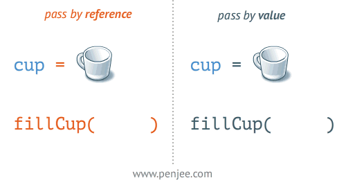

Introduction to Python
Why Python for Data Science?
Python has become the leading language for data science because of its versatility, readability, and rich ecosystem of libraries. It allows you to write code that is both simple to understand and powerful enough to handle complex data problems. The line future_value = principal * (1 + rate) ** years reads almost like english. The language itself is easy to pick up, but its true strength lies in the tools built around it: libraries like NumPy for numerical computing, pandas for data manipulation, matplotlib and seaborn for visualization, and scikit-learn for machine learning.
On top of this, Python is widely used in both academia and industry, meaning the skills learned are directly transferable to real-world applications. In acturial-specific applications, Python excels at tasks including risk modeling and Monte Carlo simulations, pricing algorithms and GLMs (Generalized Linear Models), mortality and morbidity analysis, regulatory reporting automation, and portfolio optimization. Major insurance companies and consulting firms use Python for predictive modeling, automated reserving calculations, capital modeling (Solvency II compliance), and customer analytics and pricing.
Its open-source community also ensures continuous improvement, extensive documentation, and a wealth of resources to support learners at every stage. In short, Python is not just a programming language—it is a gateway to the broader data science ecosystem.
Let’s start with a simple example to see Python in action:
What just happened? We stored numbers in variables, performed a calculation, and displayed the result. The print() function shows our answer, and the f"..." creates formatted text that combines text with variable values.
Basics: Comments and Whitespace
Before we dive into data types, let’s understand two fundamental aspects of Python for every code you will ever write.
Whitespace: Python’s Unique Feature
Unlike some other programming languages where you can organize code however you want, Python uses indentation (spaces or tabs) to group related code together. Think of it like organizing related items by grouping them visually.
Important
Python is very strict about indentation. All lines at the same “level” must be indented the same amount.
Line Continuation: Handling Long Formulas
Sometimes you need to write long calculations. Python gives you ways to split them across multiple lines:
Data Types
Now let’s explore Python’s building blocks, namely its data types. Here’s a comprehensive overview of Python’s core data types:
| Object Type | Description | Example | Mutable? | Everyday Equivalent |
|---|---|---|---|---|
| Numbers | Whole numbers, decimals | 42, 3.14, 2+3j |
No | Calculator numbers |
| Strings | Text data | 'Actuary', "Risk" |
No | Written words |
| Lists | Ordered collections | [1, 2, 3] |
Yes | Shopping lists |
| Dictionaries | Key-value pairs | {'name': 'John'} |
Yes | Phone book entries |
| Tuples | Unchangeable lists | (1, 2, 3) |
No | Fixed coordinates |
| I/O | External data | open('data.csv') |
- | Computer files |
| Sets | Unique collections | {1, 2, 3} |
Yes | Collection of unique items |
| Booleans | True/False | True, False |
No | Yes/No answers |
What does “Mutable” mean?
- Mutable = Changeable: Like a draft document you can edit
- Immutable = Unchangeable: Like a printed document, you can’t modify it, only replace it
Numbers: The Foundation of Actuarial Work
Numbers in Python work intuitively and provide great precision for calculations.
Types of Numbers
Python supports several types of numbers:
- Integers (numbers without a fractional part)
- Floating-point numbers (numbers with decimal points)
- Complex numbers (advanced math with imaginary parts)
Basic Arithmetic Operations
Python supports all standard arithmetic operations. Here’s a comprehensive reference:
| Operator | Name | Description | Example | Result |
|---|---|---|---|---|
+ |
Addition | Adds two numbers | 5 + 3 |
8 |
- |
Subtraction | Subtracts second number from first | 5 - 3 |
2 |
* |
Multiplication | Multiplies two numbers | 5 * 3 |
15 |
/ |
Division | Divides first number by second (returns float) | 5 / 2 |
2.5 |
// |
Floor Division | Divides and rounds down to nearest integer | 5 // 2 |
2 |
% |
Modulus | Returns remainder after division | 5 % 2 |
1 |
** |
Exponentiation | Raises first number to power of second | 5 ** 2 |
25 |
Here is how you can perform basic arithmetic operations in Python:
Working with Numerical Libraries
You can also use Python’s built-in libraries to perform mathematical functions such as square root and logarithm.
Random number generation is crucial for actuarial work. We use it for Monte Carlo simulations to model uncertain events like claim frequencies, generate synthetic datasets for testing models, sample from populations for analysis, and create scenarios for stress testing. Python’s random module provides the tools we need for these applications.
Strings: Working with Text Data
Strings in Python handle text data such as names, addresses, policy numbers, descriptions, etc. They’re incredibly powerful for processing textual information.
Strings are sequences of individual characters, maintaining their order from left to right.
Creating Strings
There are different ways that you can create a string. Note that a string can span one or more lines.
String Length and Basic Properties
Understanding string length is fundamental when working with data in Python. Many real-world tasks—such as validating user input, formatting output, or processing data files—require you to know how many characters are in a string. For example, policy numbers or names might need to meet specific length requirements.
TipSpaces count as characters too
When you use len() on a string, every character—including spaces, punctuation, and special symbols—is counted. For example, 'John Smith' has 10 characters: 9 letters plus 1
Lists: Ordered Collections of Data
Lists are one of Python’s most versatile and commonly used data types. Think of a list as a container that holds multiple items in a specific order, like a shopping list, a roster of names, or a sequence of measurements.
Key characteristics of lists:
- Ordered: Items maintain their position from left to right
- Mutable: You can change, add, or remove items after creation
- Flexible: Can store any data type (numbers, text, even other lists)
- Indexed: Each item has a numbered position starting from 0
Lists are perfect for actuarial work because they naturally represent collections of related data: premium amounts over time, policy numbers, claim values, or customer information.
Creating Lists
What makes lists special? They can hold any type of data, can grow or shrink, and maintain order, perfect for various applications.
List Indexing and Slicing
Every item in a list has a position called an index. Understanding indexing is crucial because it’s how you retrieve specific pieces of information from your data collections.
Important
In Python, indexes start from 0, not 1. That means the first item is position 0, the second item is position 1, and so on. Negative indexes count from the end.
You can sub-lists from the original list, in an operation called ‘slicing’:
Modifying Lists: Adding, Removing, and Changing Data
Unlike strings, lists can be modified after creation:
Try your hand at printing the results!
Other Useful List Operations
Some of the other list manipulations that may come in handy include:
- Combine:
[1,2] + [3,4] → [1,2,3,4] - Repeat:
['A','B'] * 2 → ['A','B','A','B'] - Sort:
premiums.sort() → [1180,1200,1350,1420,1500]
Dictionaries: Key-Value Data Storage
A dictionary in Python is like a small database or a labeled lookup table. Each piece of information is stored as a key–value pair:
- The key is a unique identifier (like a label or name).
- The value is the data associated with that key.
Unlike lists (where you look up items by their numeric position), dictionaries let you access data directly by name. This makes them powerful for representing real-world data, such as policies, customers, or claim records.
Think of a dictionary as a filing cabinet: the keys are labels on the folders, and the values are the documents inside.
Dictionaries are very flexible — values can be numbers, strings, lists, or even other dictionaries. Keys must be unique and cannot change once created (they are immutable types like strings or numbers).
Creating Dictionaries
You can create a dictionary in Python using curly braces {} with key–value pairs separated by colons. Each key must be unique and immutable (like a string or number), and values can be any data type.
Here are some common ways to create dictionaries:
Updating and Adding Information
Dictionaries can grow as you add more data, or be updated as circumstances change:
Safe Access
If you ask for a key that does not exist, Python will give an error. To avoid this, use .get() with a default value:
TipWhen to use dictionaries?
- When your data has meaningful labels.
- When you want fast access to specific fields (e.g., by policy number).
- When your data structure should mirror “records” in the real world.
Tuples: Immutable Sequences
A tuple is very similar to a list: it is an ordered collection of items, and each item has an index (starting at 0). However, unlike lists, tuples are immutable. Once you create a tuple, you cannot change it — you cannot add new elements, remove existing ones, or update values.
This immutability makes tuples perfect for storing information that should remain constant, like fixed coordinates. By using tuples, you can prevent accidental changes to your data, which can be very helpful when working with fixed business rules or actuarial constants.
Creating Tuples
Tuples are created by placing items inside parentheses (), separated by commas. You can also create a tuple without parentheses, just by separating values with commas. For a single-item tuple, include a trailing comma.
Tuple Immutability
Remember that because tuples are immutable, any attemp at modifying their content will result in an error.
Assigning variables in Python

For those of you new to Python, there’s an important difference between some other programming languages like R when assiging variables. In Python, when you assign a variable to another variable, you are creating a reference to the same object in memory, so any changes made to one variable will be reflected in the other variable as well. This is demonostrated in the example below:
To create a separate copy of the object, you need to use the .copy() method (python way of saying a function).
In some other programming languages, the assignment creates a copy by default, so you don’t need to use a .copy() method. Any changes you make to one variable will not affect the other variable, because they are separate copies of the same object.
Control Flow and Functions
Why Control Flow Matters
In Python, control flow lets us tell the computer how to make decisions and repeat tasks. Without control flow, programs would just run line by line without any flexibility. For example:
“If the claim amount is above 10,000, flag for review.”
“Repeat the calculation for each policy in the dataset.”
Python provides several control flow tools: if/else statements, loops, and functions.
If Statements: Making Decisions
The if statement lets your program choose between different paths based on conditions. Conditions are expressions that evaluate to True or False.
In other words, an if statement asks a question: “Is this condition true?”
- If it’s true, Python runs the indented block of code.
- If it’s false, Python skips it and moves on.
The else part catches all cases where the condition is not true, and elif (short for “else if”) lets you check multiple conditions in sequence.
Here, Python first checks if the claim is greater than 10,000. Since it is, the first block runs and the program stops checking further.
You can also chain conditions using elif:
TipImporant points about if statements
- Conditions are checked in order. As soon as one is true, the rest are ignored.
- Indentation (spacing) matters: Python uses it to know what code belongs to each condition.
- You can use comparison operators like >, <, == (equals), and logical operators like and, or, not to build more complex conditions.
Loops: Repeating Tasks
Loops allow you to perform the same action many times without rewriting code. In data science, loops are useful for iterating over datasets, applying calculations to multiple values, or simulating outcomes.
For Loops (looping over a sequence)
A for loop is used when you want to repeat something for each item in a sequence (like a list or range of numbers).
Here, the loop runs once for each item in coverages. Each time, the variable c takes on the next value in the list.
While Loops (looping until a condition is false)
A while loop repeats as long as a condition is true. This is useful when you don’t know in advance how many times you need to repeat something — only that you want to stop when a condition is met.
Here, the loop continues until balance is no longer greater than 0.
TipWhich to use when?
- Use
forwhen you know how many items you need to process. - Use
whilewhen you want to continue until a condition changes.
CautionCaution: Infinite Loops
If the condition never becomes false, a while loop can run forever (an “infinite loop”).
Logical Operators in Python
Logical operators are essential for building conditions in control flow statements. Here is a table summarizing the logical operators in Python:
| Operator | Description | Example | Result |
|---|---|---|---|
and |
Logical AND: True if both operands are true | True and False |
False |
or |
Logical OR: True if at least one operand is true | True or False |
True |
not |
Logical NOT: Inverts the truth value | not True |
False |
== |
Equal to: True if both operands are equal | 5 == 5 |
True |
!= |
Not equal to: True if operands are not equal | 5 != 3 |
True |
> |
Greater than: True if left operand is greater | 5 > 3 |
True |
< |
Less than: True if left operand is smaller | 3 < 5 |
True |
>= |
Greater than or equal to | 5 >= 5 |
True |
<= |
Less than or equal to | 3 <= 5 |
True |
These operators are commonly used in if, elif, and while statements to control the flow of a program.
Functions: Reusable Blocks of Code
Functions let you bundle code into reusable pieces. Instead of rewriting the same logic multiple times, you define a function once and call it whenever needed. This makes code shorter, cleaner, and easier to debug.
A function has three main parts:
- Name: how you refer to it later.
- Parameters: inputs you provide.
- Return value: the output the function gives back.
Parameters and Defaults
Functions can have default parameters, which are used if you don’t provide a value.
Scope: Local vs. Global Variables
Variables created inside a function only exist while the function is running. This is called local scope. Variables outside are in global scope.
Error Handling with try/except
In Python, you can use try and except blocks to handle errors gracefully. This is useful when you want your program to continue running even if something goes wrong.
NoteKey Points:
- The
tryblock contains the code that might raise an error. - The
exceptblock contains the code to handle the error. - You can specify the type of error to catch specific exceptions.
A common error in Python is the “list index out of range” error. This happens when you try to access an index that does not exist in the list. You can use a generic except block to catch any error:
Avoid this by always check the length of the list using len() before accessing an index. You can also use a try/except block to handle the error gracefully.
Putting It All Together
Functions and control flow often work hand-in-hand:
Here, the function decides the category of each claim, and the loop applies it to all claims in the list.
Classes
Brief Introduction to Classes
So far, we have worked with Python’s built-in data types like lists, dictionaries, and strings. But in real-world applications, especially in data science, we often need to represent more complex objects — like a customer, a policy, or a claim. A class allows us to bundle data (attributes) and behavior (methods) together into a single structure.
A class is like a blueprint for creating objects. Each object created from a class is called an instance, and it can hold its own unique values while still sharing the same structure and functions defined by the class.
This helps organize code, avoid repetition, and model real-world concepts more naturally.
Take a look at the example class created for an insurance policy below:
You can create and use objects of the class in order to suit your coding needs:
Note
Each object (policy1, policy2) is independent, with its own attribute values, but both share the same structure defined in the Policy class.
What is init in a Class?
The __init__ method is a special function in Python classes. It runs automatically when you create an object from the class. Its main job is to set up the object’s attributes with the values you provide.
NoteKey Points
__init__is like a setup function for your object.- It always takes
selfas the first parameter, which refers to the object being created. - You can add more parameters to pass values for the object’s attributes.
Why Use __init__?
- It ensures the object is ready to use right after creation.
- It allows you to set initial values for the object’s attributes.
Key Takeaways
- Python’s simplicity makes it ideal for actuaries transitioning to programming
- Rich data types (lists, dictionaries) naturally represent data
- Control flow implements rules and decision logic
- Functions allow you to create reusable calculations
- Classes help model real-world entities
Remember: The goal isn’t to memorize syntax, but to understand how Python’s building blocks can solve actuarial problems efficiently and clearly.
Bonus: Advanced Strings
Indexing: Accessing Individual Characters
Just as we learned for lists, each character in a string has a position number, called an index. Remeber that in Python, indexes start at 0, not 1. This is called zero-based indexing. You can also use negative indexing to count from the end of the string.
Out of Range Errors
If you try to access a position that does not exist, Python will raise an error.
Slicing: Extracting Substrings
Slicing lets you take a range of characters from a string. You specify a start and end index, and Python gives you everything in between. The start is inclusive, but the end is exclusive.
String Operations: Combining and Repeating
You can combine strings together (concatenation) or repeat them multiple times. This is useful for creating formatted outputs or repeated patterns.
Immutability: Strings Cannot Be Changed
Unlike lists, strings cannot be modified after creation. If you want to “change” a string, you must build a new one.
Useful String Methods
Strings have many built-in methods that make them powerful for text cleaning, transformation, and validation. Below are some examples:
More String Formatting: Format Text Output
String formatting is essential for creating readable reports. Modern Python uses f-strings, which allow you to embed variables directly inside text.
Getting Help with String Methods
In general, there are two different types of operations in Python:
- Built-in functions or expressions (e.g.
len(string_1)andstring_1[0]) - Type-specific operations (methods) (e.g.
string_1.lower()andstring_1.isdigit())
You can discover available methods with dir() and get detailed explanations with help().
Comments: Explaining Your Code
Comments are notes you write for yourself and others. Python ignores everything after a
#symbol on a line.Why use comments? Imagine returning to your code 6 months later - comments help you remember what each calculation does!